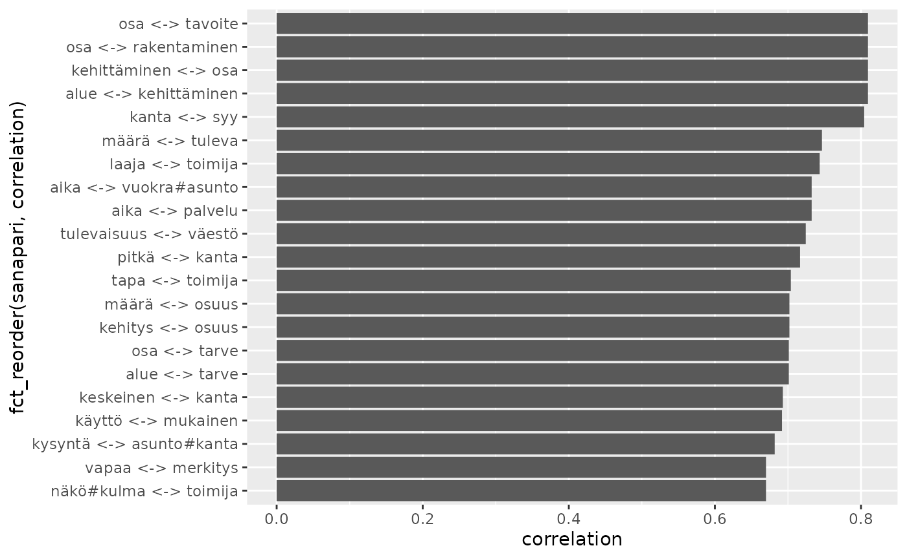
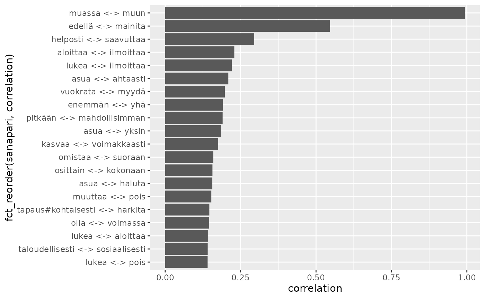
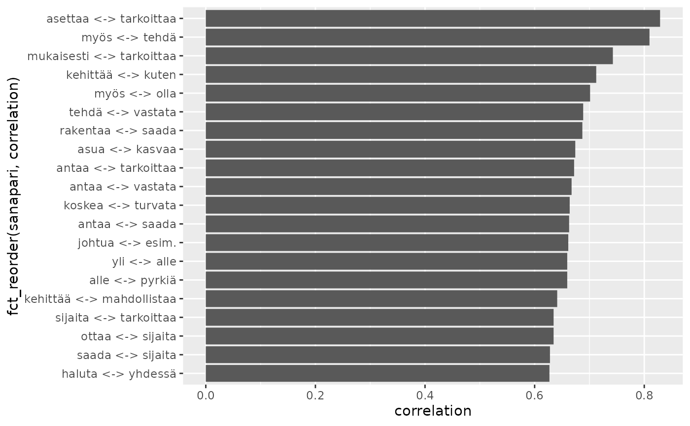

library(rfintext)
# devtools::install_github("StranMax/rfinstats")
library(rfinstats)
library(dplyr)
library(sf)
library(tidytext)
library(ggplot2)
library(stringr)
library(forcats)
library(widyr)
aspol_luokat <- left_join(aspol, taantuvat)
#> Joining with `by = join_by(kunta)`
# pattern <- str_c(c("✓", "", "x", "X", "@", "bostad", "\\."), collapse = "|")
aspol_luokat_suod <- aspol_luokat |>
filter(
#!str_detect(LEMMA, pattern),
FEATS != "Foreign",
nchar(LEMMA) > 2,
!is.na(luokka)
)
lemma_noun_adj_kappale <- aspol_luokat_suod |>
filter(UPOSTAG %in% c("NOUN", "ADJ")) |>
mutate(kappale = paste0(kunta, "-", sent)) |>
count(kappale, LEMMA)
lemma_cor_noun_adj_kappale <- lemma_noun_adj_kappale |>
group_by(LEMMA) |>
filter(n() >= 40) |>
pairwise_cor(LEMMA, kappale, sort = TRUE, upper = FALSE)
lemma_cor_noun_adj_kappale |>
mutate(sanapari = paste0(item1, " <-> ", item2)) |>
slice_max(correlation, n = 20) |>
ggplot() +
geom_col(aes(x = correlation, y = fct_reorder(sanapari, correlation)))
lemma_noun_adj_kunta <- aspol_luokat_suod |>
filter(UPOSTAG %in% c("NOUN", "ADJ")) |>
count(kunta, LEMMA)
lemma_cor_noun_adj_kunta <- lemma_noun_adj_kunta |>
group_by(LEMMA) |>
filter(n() >= 40) |>
pairwise_cor(LEMMA, kunta, sort = TRUE, upper = FALSE)
lemma_cor_noun_adj_kunta |>
mutate(sanapari = paste0(item1, " <-> ", item2)) |>
slice_max(correlation, n = 20) |>
ggplot() +
geom_col(aes(x = correlation, y = fct_reorder(sanapari, correlation)))
lemma_verb_adv_kappale <- aspol_luokat_suod |>
filter(UPOSTAG %in% c("VERB", "ADV")) |>
mutate(kappale = paste0(kunta, "-", sent)) |>
count(kappale, LEMMA)
lemma_cor_verb_adv_kappale <- lemma_verb_adv_kappale |>
group_by(LEMMA) |>
filter(n() >= 40) |>
pairwise_cor(LEMMA, kappale, sort = TRUE, upper = FALSE)
lemma_cor_verb_adv_kappale |>
mutate(sanapari = paste0(item1, " <-> ", item2)) |>
slice_max(correlation, n = 20) |>
ggplot() +
geom_col(aes(x = correlation, y = fct_reorder(sanapari, correlation)))
lemma_verb_adv_kunta <- aspol_luokat_suod |>
filter(UPOSTAG %in% c("VERB", "ADV")) |>
count(kunta, LEMMA)
lemma_cor_verb_adv_kunta <- lemma_verb_adv_kunta |>
group_by(LEMMA) |>
filter(n() >= 40) |>
pairwise_cor(LEMMA, kunta, sort = TRUE, upper = FALSE)
lemma_cor_verb_adv_kunta |>
mutate(sanapari = paste0(item1, " <-> ", item2)) |>
slice_max(correlation, n = 20) |>
ggplot() +
geom_col(aes(x = correlation, y = fct_reorder(sanapari, correlation)))